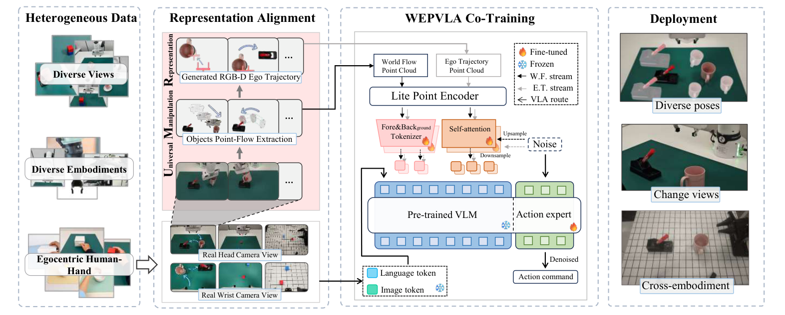
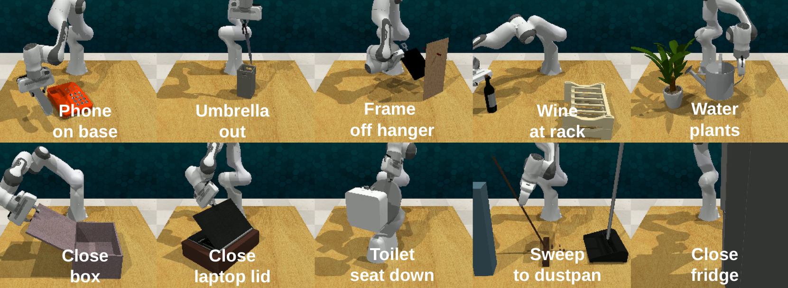
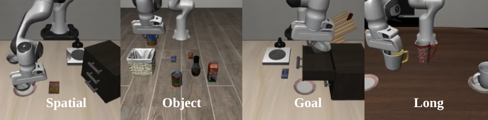
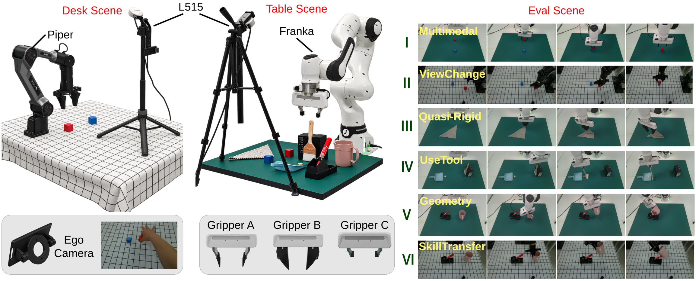
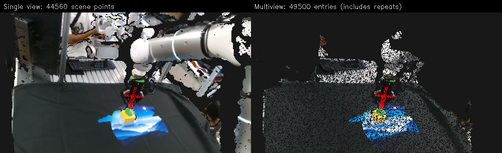

UMR
A unified geometric action representation coupling embodiment-agnostic World Flow with locally executable Ego Trajectory through SE(3) conjugation.
UMR decomposes manipulation into World Flow and Ego Trajectory, coupling transferable object motion with executable robot-local actions.
A unified geometric action representation coupling embodiment-agnostic World Flow with locally executable Ego Trajectory through SE(3) conjugation.
A compact 0.5B point-cloud VLA with motion-aware segmentation, a dual-stream Point Action Adapter, and a shared Point Action Expert.
Stage-aware point-cloud editing diversifies object configurations while preserving demonstrated contact geometry.
World Flow describes task-relevant object motion as a structured SE(3) trajectory in the world frame. Ego Trajectory expresses the corresponding end-effector motion relative to its current pose, yielding a controller-aligned action representation.
The conjugate transformation makes them geometrically consistent views of one motion, allowing task intent learned from one demonstrator to be executed by another embodiment.
A dual-stream Point Action Adapter encodes World Flow and Ego Trajectory under their respective geometric supervision. Both streams are fused in a shared Point Action Expert that generates transferable task motion and executable actions jointly.

DES edits task-relevant object configurations at the point-cloud level according to the current interaction stage. It creates diverse training configurations while preserving demonstrated contact and relative interaction geometry.



WEPVLA instantiates UMR as a compact 0.5B-parameter point-cloud VLA. Both World Flow and Ego Trajectory are jointly denoised at inference, while only the locally executable Ego action chunk is sent to the robot.
Mean success across 10 tasks, outperforming PointACT (82.3%) while using a smaller 0.5B model.
Average success across Spatial, Object, Goal, and Long-Horizon suites with one policy trained on all 40 tasks.
World Flow captures transferable task motion; Ego Trajectory provides executable robot-local control.
| Benchmark | Model | Model Size | Mean / Avg. Success |
|---|---|---|---|
| RLBench 10 tasks | HybridVLA | 7B | 74.0 |
| RLBench 10 tasks | PointACT | 3B | 82.3 |
| RLBench 10 tasks | WEPVLA (Ours) | 0.5B | 85.7 |
| LIBERO 4 suites | PointACT | 3B | 96.0 |
| LIBERO 4 suites | OpenVLA-OFT | 7B | 96.8 |
| LIBERO 4 suites | WEPVLA (Ours) | 0.5B | 97.5 |
| Method | Training Data | Cross-Environment | Cross-Embodiment | Cross-Setup | Tasks I–VI Avg. |
|---|---|---|---|---|---|
| HumanEgo | Human only, ≈10 min/task | 70.0 | 60.8 | 58.3 | 60.8 |
| WEPVLA (Ours) | Human only, ≈10 min/task | 95.0 | 91.7 | 90.0 | 91.7 |
Average across six settings with no robot demonstrations, versus 60.8% for HumanEgo.
Per task: 100 human demonstrations, with DES generating 500 additional episodes.
Long-6/Long-8 average when scaling from 100 to 14,300 heterogeneous episodes.
The V10 scaling study combines heterogeneous demonstrations from RH20T, LIBERO, and RLBench with egocentric and exocentric real-world observations. The Data-Efficient Strategy further expands task-relevant object configurations through stage-aware point-cloud editing while preserving interaction geometry.
Real RGB-D manipulation demonstrations, including pressing, napkin pulling, and drawer opening.
Spatial, object, goal, and long-horizon tasks reconstructed as RGB-D demonstrations.
Simulation skills spanning articulated objects, grasp manipulation, tool use, and watering.
First-person human manipulation demonstrations captured from a body-aligned viewpoint.
Third-person observations of the same manipulation setting from an external camera viewpoint.
Stage-aware point-cloud editing generates diverse object configurations while preserving interaction geometry.
Pick a scene below to view RGB-D inputs, prediction, and ground truth.
NOTE: Prediction shows single-view filtering; the reference viewer shows multiview reconstruction.



UMR review samples are served through the interactive section.
This hidden template can be re-enabled when final annotation assets are available.
Select a task and rollout to inspect UMR under different embodiments and real-world manipulation conditions.
Select a case to inspect the rollout and the mechanism behind the observed failure.
Repeated recovery attempts consume the remaining control horizon before the terminal condition is reached.
The rollout is stopped by the evaluation time limit rather than an unsafe terminal state. Long recovery sequences therefore appear as failures even while the policy is still making corrective progress.
We thank the colleagues who provided valuable feedback on the UMR formulation and assisted with data collection, system integration, and real-world robot evaluations. We are also grateful to the creators and maintainers of RLBench, LIBERO, RH20T, SmolVLA, and Viser, as well as the broader open-source robotics community, for the benchmarks, datasets, model components, and visualization tools that supported this work.